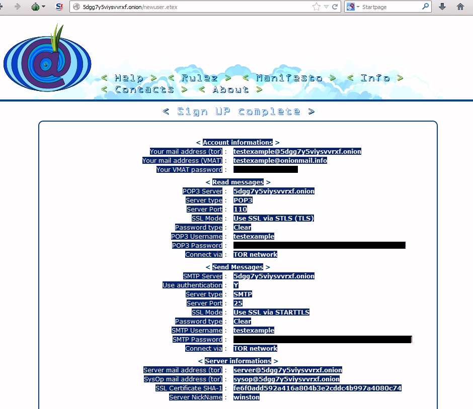
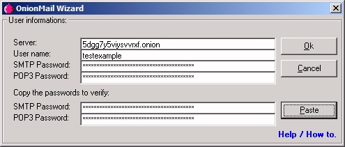
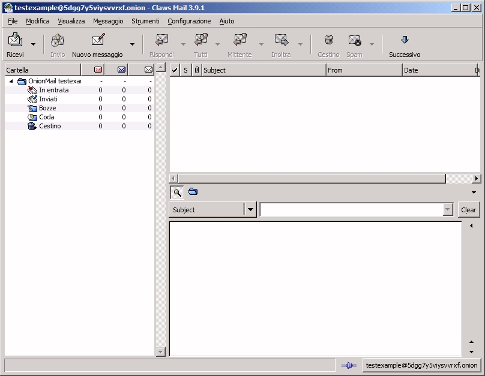
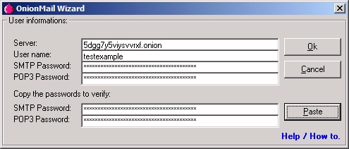
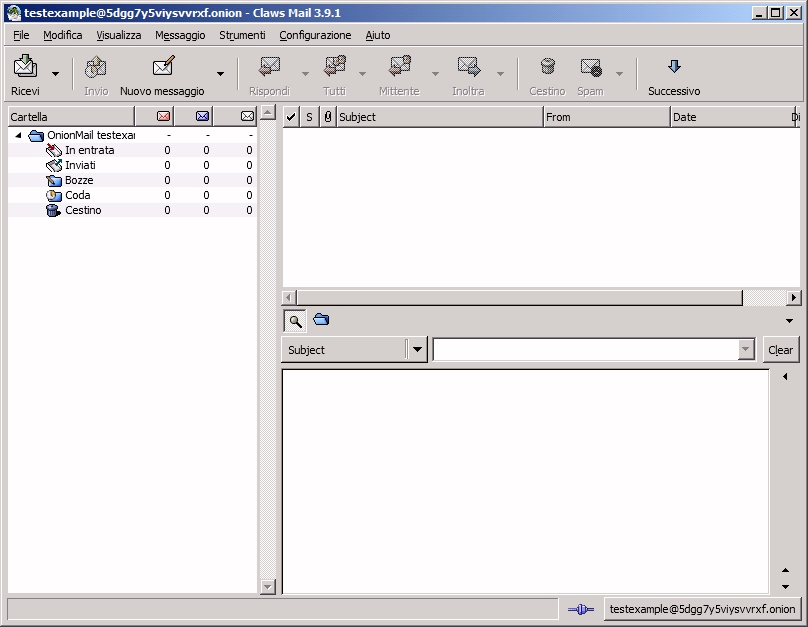

Now you need to create a new user:
(These steps are required only at the first time).
- Use TOR browser. You can download it here.
- Follow this guide to set up your account on Claws-Mail.
- Go to the OnionMail server directory. (Available in TOR network).
- Select a server and sign in a new user.
- When the registration is complete you will see a page with all the data including logins and passwords.
- Copy to the clipboard all user's data.
- Run the wizard and use the button "Paste".
This is a local html file. Don't use this browser to see the OnionMail server directory.
Use TOR Browser instead.
Only the TOR browser can see the .onion sites (Hidden services).
Don't use another PROXY or TOR2WEB.

After subscription, select all text and copy it to the clipboard (CTRL+C).

Click on OnionMail icon on your desktop.

Click on the "Paste" button, then click on the "Ok" button.

Claws-Mail, TOR, GnuPG, NTU are configurated automatically.

Don't worry. This is the console of OnionMail and other programs.
After subscription, select all text and copy it to the clipboard (CTRL+C).
Click on OnionMail icon on your desktop.

Click on the "Paste" button, then click on the "Ok" button.

Claws-Mail, TOR, GnuPG, NTU are configurated automatically.
Don't worry. This is the console of OnionMail and other programs.